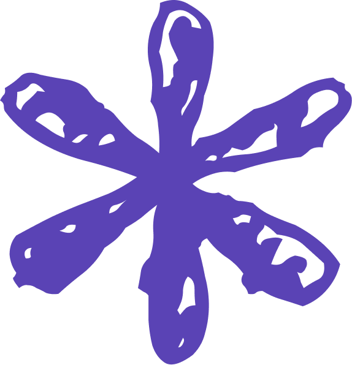

Je suis Indira et je transforme les idées en experiences digitales bien pensées, ainsi que en applications web qui se sentent bien dans leur peau : utiles,évolutives et épurées.
Contenu, Web, UX éditoriale, SEO/GEO — de l’idée à la mise en ligne —.
10 ans d'experience en contenu
Paris - France
ES/FR
Projets - Experiments

Mon portfolio - Git Pages
Cree un portfolio avec un design original, epuree et leger que demontre mes competences et ma creativite
Refont CMS - Indirocracia
Refont du site Indirocracia, journal d'experimentation narratif en ligne since 2014
Conception et developpement web - App de voyages Periplia
Application web pour la gestion de voyages en groupe